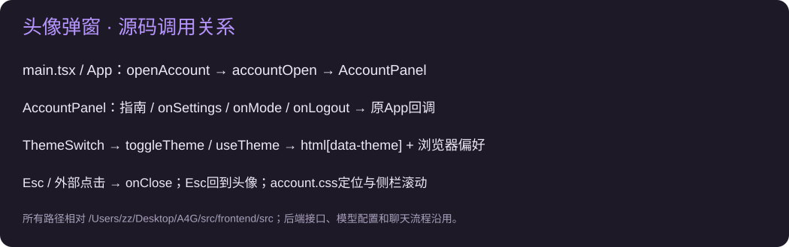

| main.tsx / App / openAccount / closeAccount | 维护开启状态、最后触发器与焦点恢复；传递原指南/模式/设置/退出回调。 |
| components/AccountPanel.tsx / AccountPanel / useEffect | 渲染四类入口；监听pointerdown与Escape，卸载清理；打开时聚焦关闭按钮。 |
| theme.tsx / ThemeSwitch / useTheme | 可访问role=switch及aria-checked，沿用主题切换和本地偏好。 |
| components/account.css | 左下弹窗/右上紧凑弹窗、拨动效果与紫色配色，最近列表滚动以保障头像可见。 |
路径基于 /Users/zz/Desktop/A4G/src/frontend/src；未新增后端接口。